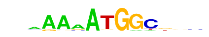

| p-value: | 1e-89 |
| log p-value: | -2.057e+02 |
| Information Content per bp: | 1.699 |
| Number of Target Sequences with motif | 798.0 |
| Percentage of Target Sequences with motif | 5.22% |
| Number of Background Sequences with motif | 586.3 |
| Percentage of Background Sequences with motif | 1.79% |
| Average Position of motif in Targets | 45.4 +/- 25.6bp |
| Average Position of motif in Background | 50.0 +/- 29.3bp |
| Strand Bias (log2 ratio + to - strand density) | 10.0 |
| Multiplicity (# of sites on avg that occur together) | 1.02 |
| Motif File: | file (matrix) reverse opposite |
| Rank | Match Score | Redundant Motif | P-value | log P-value | % of Targets | % of Background | Motif file |
| 1 | 0.890 | 1e-80 | -184.237629 | 3.00% | 0.69% | motif file (matrix) | |
| 2 | 0.938 | 1e-75 | -174.019028 | 8.95% | 4.54% | motif file (matrix) | |
| 3 | 0.879 |  | 1e-61 | -140.788594 | 3.39% | 1.12% | motif file (matrix) |
| 4 | 0.825 | 1e-44 | -103.167794 | 7.08% | 3.99% | motif file (matrix) | |
| 5 | 0.651 | 1e-28 | -66.057331 | 1.46% | 0.45% | motif file (matrix) | |
| 6 | 0.732 | 1e-24 | -55.478878 | 0.83% | 0.18% | motif file (matrix) | |
| 7 | 0.705 | 1e-22 | -51.633805 | 0.50% | 0.05% | motif file (matrix) | |
| 8 | 0.608 | 1e-10 | -24.599885 | 0.50% | 0.15% | motif file (matrix) |